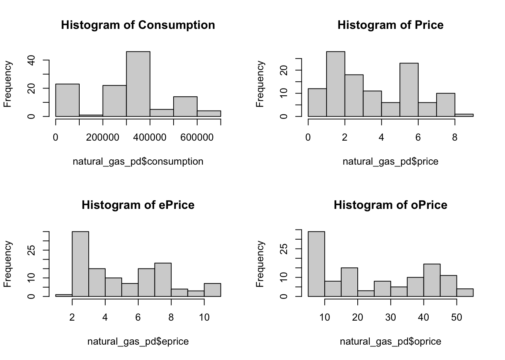
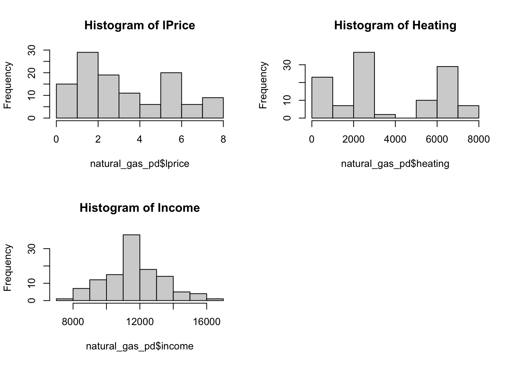
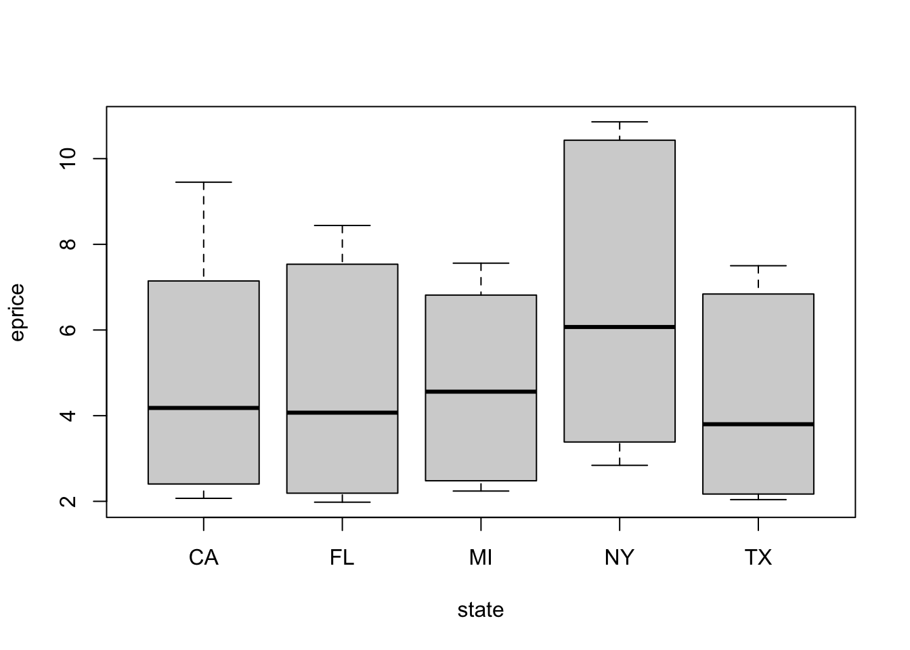
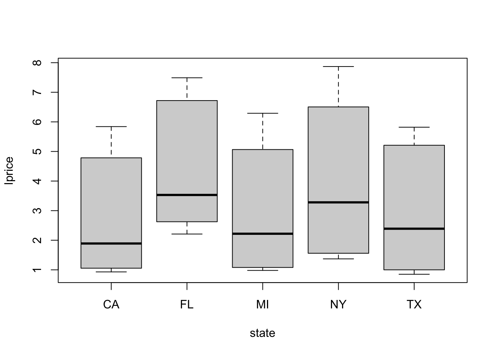
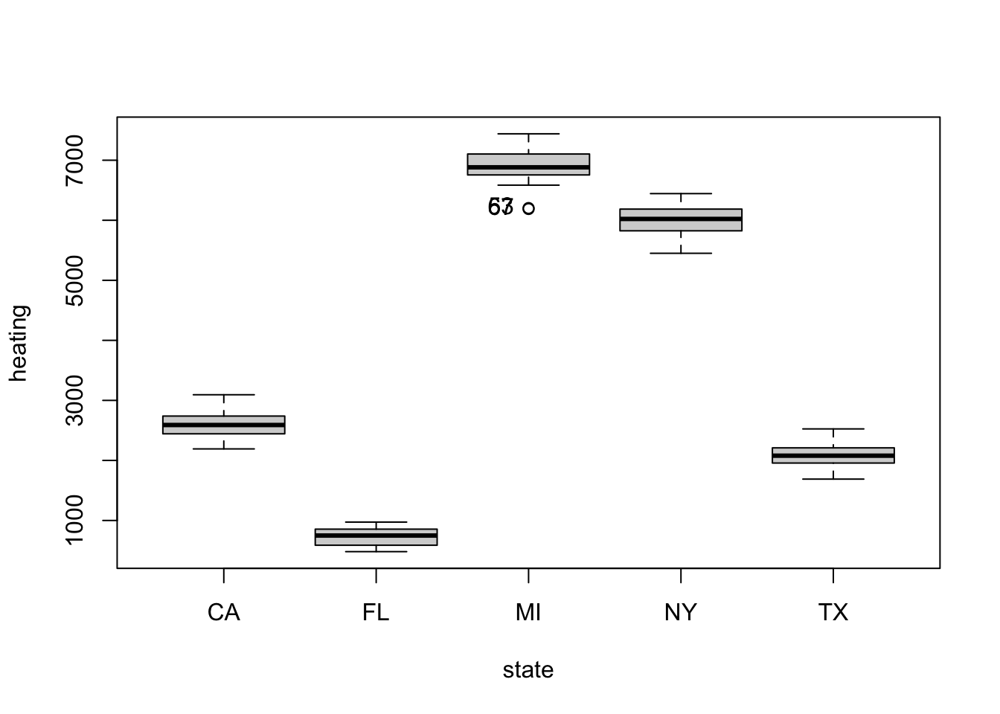
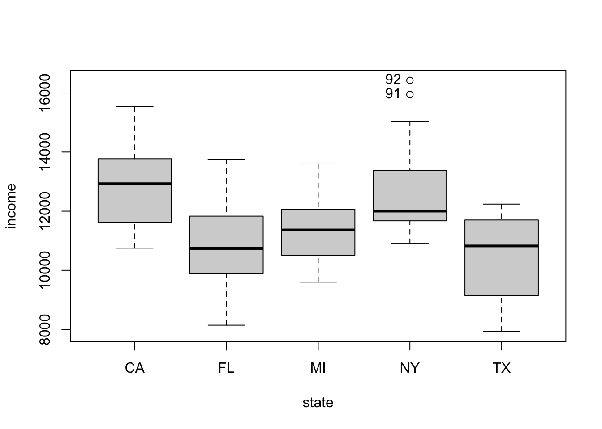
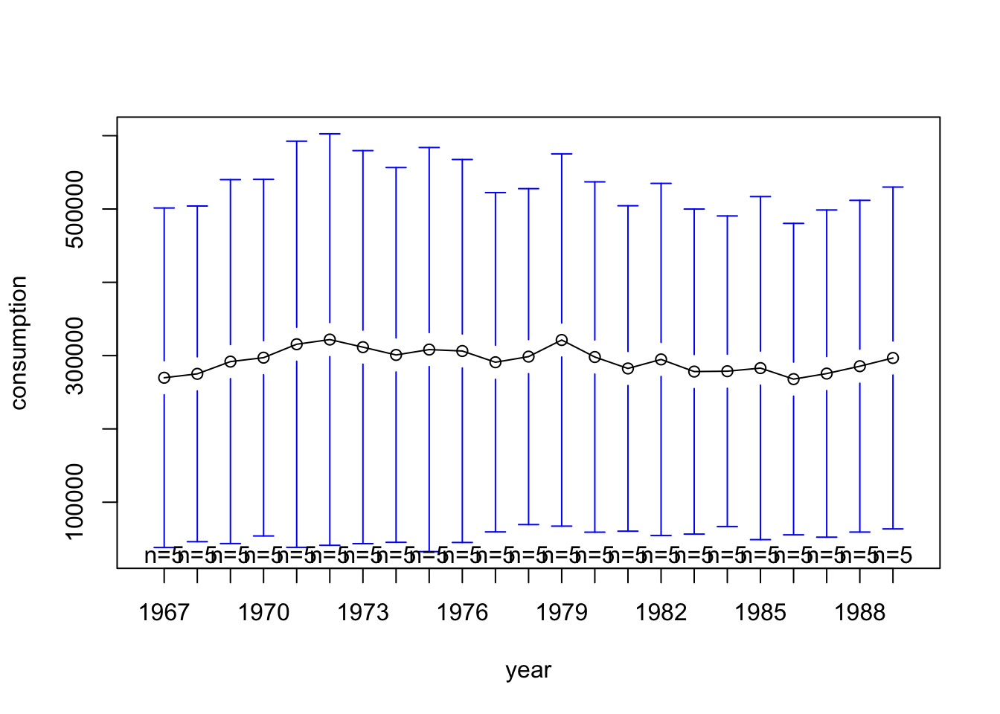

This project analyzes residential natural gas consumption across five U.S. states (NY, FL, MI, TX, CA) from 1967–1989 using panel data techniques. I explored how energy prices, heating degree days, and per-capita income affect consumption, comparing pooled, fixed-effects, and random-effects models. Diagnostics, heterogeneity tests, and model selection procedures were applied to identify the preferred two-way fixed effects model, providing insights into the influence of climate, prices, and income on gas consumption.
Author
Prisha Narasimhan
Published
October 15, 2025
data("NaturalGas")natural_gas <-subset(NaturalGas, state =="NY"| state =="FL"| state =="MI"| state =="TX"| state =="CA")natural_gas_pd <-pdata.frame(natural_gas, index =c("state", "year"))class(natural_gas_pd) # make sure it's a panel data
[1] "pdata.frame" "data.frame"
dim(natural_gas_pd) # dimension
[1] 115 10
is.pbalanced(natural_gas_pd) # is it balanced
[1] TRUE
a. Data Discussion
Briefly discuss the question you are trying to answer.
For this panel data projet, we’re using the Natural Gas dataset from the AERpackage in R, which contains 115 observations from 5 US states over the period 1967-1989. The source of the data is from Baltagi (2002). The dataset includes variables such as consumption (consumption of natural gas by the residential sector), price (the price of natural gas), eprice, (price of electricity), oprice (price of distillate fuel oil), lprice (price of liquefied petroleum gas), heating (heating degree days), and income (real per-capita personal income). Specifically, the question we are trying to answer is: How do prices (of natural gas, electricity, distillate fuel oil, and liquefied petroleum gas),heating degree days, and personal income affect consumption of natural gas? The dimensions of the panel dataset is 115 rows and 10 columns and is therefore long and narrow. The panel dataset is balanced.
The citation of the dataset is: Baltagi, B.H. (2002). Econometrics, 3rd ed. Berlin, Springer.
b. Variable Description
Provide a descriptive analysis of your variables. This should include relevant figures with comments including some graphical depiction of individual hetero-geneity; no unnecessary figures!
# histograms for each variablepar(mfrow =c(2,2))hist(natural_gas_pd$consumption, main ="Histogram of Consumption")hist(natural_gas_pd$price, main ="Histogram of Price")hist(natural_gas_pd$eprice, main ="Histogram of ePrice")hist(natural_gas_pd$oprice, main ="Histogram of oPrice")

par(mfrow =c(2,2))hist(natural_gas_pd$lprice, main ="Histogram of lPrice")hist(natural_gas_pd$heating, main ="Histogram of Heating")hist(natural_gas_pd$income, main ="Histogram of Income")

I ran histograms for each feature and the response in the case of an extreme right skew. In which case, we would implement the log of the variable to better adhere to the linear regression assumptions. From the plots we see that while there are some moderate right skews, none of which are rather extreme, and therefore, we will not need to log transform the respective variables.
Consumption: Residential gas consumption is somewhat normal and however, has a second peak towards the left tail. The two peaks are between 0 and 50,000 and 300,000 and 350,000, suggesting that these are perhaps the more common ranges for annual residential gas consumption across states. The range of the data is between 0 to 65,000 with limited to no outliers observed.
Price: The price of natural gas is slightly right-skewed, indicating that while the price of natural gas has been relatively low across most state-years, there have been a few instances of higher prices. The peak occurs around 1 to 2, suggesting that this is the common range of prices for natural gas across states. The range of prices is from 0 to 9 with limited to no outliers observed.
ePrice: The price of electricity is slightly right-skewed, indicating that while the price of electricity has been relatively lower across most state-years, there have been a few instances of higher electricity prices. The peak occurs around 2 to 3, suggesting that this is the common range of prices for electricity across states. The range of prices for electricity is from 1 to 11 with limited to no outliers observed.
oPrice: The price of distillate fuel oil is very slightly right-skewed, indicating that while the price of distillate fuel oil has been somewhat relatively lower across most state-years, there have been fewer years of higher distillate fuel oil prices as well. The peak occurs around 5 to 10, suggesting that this is the most common range of prices for distillate fuel oil. The range of prices is from 5 to 55 with limited to no outliers observed.
lPrice: The price of liquefied petroleum gas has a very slight right-skew, indicating that while the price of liquefied petroleum gas has been somewhat relatively lower across most state-years, there have been fewer years of higher liquefied petroleum gas as well. The peak occurs around 1 to 2, suggesting that this is the common range of prices for liquefied petroleum gas. The range of prices is from 0 to 8 with limited to no outliers observed.
Heating: Heating degree days looks to have a bi-modal distribution with two peaks from 2000 to 3000, and 6000 to 7000, suggesting that these are perhaps the more common ranges for heating degree days across states. The range of data is between 0 to 8000 with limited to no outliers observed.
Income: Income across all states and years is approximately normally distributed, indicating that most state-year observations cluster around a central average, with fewer very low or very high values. There is no strong skew, and extreme outliers seem limited.
scatterplot(consumption ~ state | year, data = natural_gas_pd)
[1] "24" "35" "57" "60" "104" "105"
From the scatterplot of consumption across states, we see a varying range of the data, with California having the largest range and Florida seemingly have the shortest. Additionally, the means with respect to the level of consumption indicates rather varying level of consumption per state. Therefore, both the average level of consumption and the range of consumption seem different across states, suggesting individual heterogeneity.
scatterplot(price ~ state | year, data = natural_gas_pd)
From the scatterplot of the price of natural gas across states, we see a similar price range of the data, and somewhat similar average price levels as well. Based on the similar price levels and ranges across states, this scatterplot therefore does not suggest individual heterogeneity, though further testing is necessary.
scatterplot(eprice ~ state | year, data = natural_gas_pd)

From the scatterplot of the price of electricity across states, we see a slightly varying price range of the data, and however, somewhat similar average price levels. Based on the similar price levels and slightly varying ranges across states, this scatterplot does not suggest individual heterogeneity, though further testing is necessary.
scatterplot(oprice ~ state | year, data = natural_gas_pd)
From the scatterplot of the price of distillate fuel oil across states, we see a similar price range of the data, and similar average price levels. Based on the similar price levels and ranges across states, this scatterplot does notsuggest individual heterogeneity.
scatterplot(lprice ~ state | year, data = natural_gas_pd)

From the scatterplot of the price of liquefied petroleum gas, we see a similar price range of the data, and somewhat varying average price levels. Based on the similar price levels and slightly varying ranges across states, this scatterplot therefore does not suggest individual heterogeneity, however further testing is necessay.
scatterplot(heating ~ state | year, data = natural_gas_pd)

[1] "53" "67"
From the scatterplot of heating degree days, we see a similar range of the data across states. Additionally, the means with respect to the level of heating indicates an extremely varying level of heating degree days per state. Therefore, while the range of the level of heating is rather similar across states, the average level greatly varies, suggesting indivdual heterogeneity, though further testing is necessary.
scatterplot(income ~ state | year, data = natural_gas_pd)

[1] "91" "92"
From the scatterplot of per-capita personal income, we see varying ranges of the data across states. Additionally, the means with respect to the level of income indicates an moderate level of variation of income per state. Therefore, while the range and price of the level of income moderately vary, individual heterogeneity is suggested, though further testing is necessary.
Based on the analysis of the observable variables, it is suggested that individual heterogeneity may be present in the model, alluding to the fact the differences may be attributed to factors or variables that are unobserved or unaccounted for.
plotmeans(consumption ~ state, data = natural_gas_pd)
Warning in arrows(x, li, x, pmax(y - gap, li), col = barcol, lwd = lwd, :
zero-length arrow is of indeterminate angle and so skipped
Warning in arrows(x, li, x, pmax(y - gap, li), col = barcol, lwd = lwd, :
zero-length arrow is of indeterminate angle and so skipped
Warning in arrows(x, li, x, pmax(y - gap, li), col = barcol, lwd = lwd, :
zero-length arrow is of indeterminate angle and so skipped
Warning in arrows(x, li, x, pmax(y - gap, li), col = barcol, lwd = lwd, :
zero-length arrow is of indeterminate angle and so skipped
Warning in arrows(x, li, x, pmax(y - gap, li), col = barcol, lwd = lwd, :
zero-length arrow is of indeterminate angle and so skipped
Warning in arrows(x, ui, x, pmin(y + gap, ui), col = barcol, lwd = lwd, :
zero-length arrow is of indeterminate angle and so skipped
Warning in arrows(x, ui, x, pmin(y + gap, ui), col = barcol, lwd = lwd, :
zero-length arrow is of indeterminate angle and so skipped
Warning in arrows(x, ui, x, pmin(y + gap, ui), col = barcol, lwd = lwd, :
zero-length arrow is of indeterminate angle and so skipped
Warning in arrows(x, ui, x, pmin(y + gap, ui), col = barcol, lwd = lwd, :
zero-length arrow is of indeterminate angle and so skipped
Warning in arrows(x, ui, x, pmin(y + gap, ui), col = barcol, lwd = lwd, :
zero-length arrow is of indeterminate angle and so skipped
The above plot indicates that across each unit (states), there are differences in the average level of consumption of natural gas.
plotmeans(consumption ~ year, data = natural_gas_pd)

The above plot suggests that overtime, the average level of consumption doesn’t seem to fluctuate much. Additionally, the range also seems to be of a constant size over time. From the plot, statistical insignificance of the differnce maybe be suggested but further testing is necessary to make such a conclusion. Overall, while there may be consistency across the years, there seems to be significant individual differences across states.
c. Model Fitting
c.Fit the three models below, and identify which model is your preferred one and why. Make sure to include your statistical diagnostics to support your conclusion, and to comment on your findings.
The coefficients from the pooled model may be interpretted as such: A one-unit increase in the price of natural gas is associated with a 104,163 unit decrease in natural gas consumption, on average, across all states and years. A one-unit increase in the price of electricity is associated with a 27,709 unit increase in electricity consumption, on average, across all states and years. A one-unit increase in the price of distillate fuel oil is associated with a 3,868 unit increase in distillate fuel oil consumption, on average, across all states and years. A one-unit increase in the price of liquefied petroleum gas is associated with a 15,593 unit decrease in distillate fuel oil consumption, on average, across all states and years. A one-unit increase in the heating degree days is associated with a 5.112 unit increase in consumption, on average, across all states and years. A one-unit increase in the per-capita personal income is associated with a 85.77 unit increase in consumption, on average, across all states and years.
# Fixed effect model: one way (individual)withinreg1 <-plm(consumption~price+eprice+oprice+lprice+heating+income, model="within", effect ="individual", data=natural_gas_pd)summary(withinreg1)
Oneway (individual) effect Within Model
Call:
plm(formula = consumption ~ price + eprice + oprice + lprice +
heating + income, data = natural_gas_pd, effect = "individual",
model = "within")
Balanced Panel: n = 5, T = 23, N = 115
Residuals:
Min. 1st Qu. Median 3rd Qu. Max.
-66534 -12662 214 11717 80863
Coefficients:
Estimate Std. Error t-value Pr(>|t|)
price 8550.60 9935.04 0.86 0.391
eprice -7366.93 5722.26 -1.29 0.201
oprice 75.25 490.75 0.15 0.878
lprice -7267.64 8547.89 -0.85 0.397
heating 46.93 10.45 4.49 0.000018 ***
income 6.75 3.96 1.71 0.091 .
---
Signif. codes: 0 '***' 0.001 '**' 0.01 '*' 0.05 '.' 0.1 ' ' 1
Total Sum of Squares: 8.89e+10
Residual Sum of Squares: 6.63e+10
R-Squared: 0.254
Adj. R-Squared: 0.183
F-statistic: 5.91678 on 6 and 104 DF, p-value: 0.0000241
This model accounts for individual effects. We may conclude that generally (and the term generally may be applied to all other coefficient interpretations for this set of comments) there is 8550.60 increase in the level of consumption when the price of natural gas increases by 1 unit. There is 7366.93 decrease in the level of consumption when the price of electricity increases by one unit. There is a 75.25 increase in the level of consumption when the price of distillate fuel oil increases by one unit. There is a 7267.64 decrease in the level of consumption when the price of liquefied petroleum gas increases by one unit. There is a 46.93 increase in the level of consumption when heating degree days increaes by one unit. And there is a 6.75 increase in the level of consumption when per-capita personal income increases by one unit. This is the result within each state once accounting for the differences between states.
# Fixed effect model: one way (time)withinreg2 <-plm(consumption~price+eprice+oprice+lprice+heating+income, model="within", effect ="time", data=natural_gas_pd)summary(withinreg2)
Oneway (time) effect Within Model
Call:
plm(formula = consumption ~ price + eprice + oprice + lprice +
heating + income, data = natural_gas_pd, effect = "time",
model = "within")
Balanced Panel: n = 5, T = 23, N = 115
Residuals:
Min. 1st Qu. Median 3rd Qu. Max.
-114033 -43894 -1522 50755 163319
Coefficients:
Estimate Std. Error t-value Pr(>|t|)
price -7.24e+04 3.67e+04 -1.97 0.0517 .
eprice 3.68e+04 1.37e+04 2.68 0.0088 **
oprice 2.89e+03 3.21e+03 0.90 0.3719
lprice -1.08e+05 3.79e+04 -2.84 0.0056 **
heating 4.02e-01 3.95e+00 0.10 0.9190
income 9.00e+01 9.59e+00 9.38 8.1e-15 ***
---
Signif. codes: 0 '***' 0.001 '**' 0.01 '*' 0.05 '.' 0.1 ' ' 1
Total Sum of Squares: 3.5e+12
Residual Sum of Squares: 4.99e+11
R-Squared: 0.857
Adj. R-Squared: 0.811
F-statistic: 86.0979 on 6 and 86 DF, p-value: <2e-16
This model accounts for time effects. We may conclude that generally (and the term generally may be applied to all other coefficient interpretations for this set of comments) there is 7.24e+04 decrease in the level of consumption when the price of natural gas increases by 1 unit. There is 3.68e+04 increase in the level of consumption when the price of electricity increases by one unit. There is a 2.89e+03 increase in the level of consumption when the price of distillate fuel oil increases by one unit. There is a 1.08e+05 decrease in the level of consumption when the price of liquefied petroleum gas increases by one unit. There is a 4.02e-01 increase in the level of consumption when heating degree days increase by one unit. And there is a 9.00e+01 increase in the level of consumption when per-capita personal income increases by one unit. This is the result within each year once accounting for the differences across time.
Twoways effects Within Model
Call:
plm(formula = consumption ~ price + eprice + oprice + lprice +
heating + income, data = natural_gas_pd, effect = "twoways",
model = "within")
Balanced Panel: n = 5, T = 23, N = 115
Residuals:
Min. 1st Qu. Median 3rd Qu. Max.
-60442 -11674 -136 12153 56993
Coefficients:
Estimate Std. Error t-value Pr(>|t|)
price 12557.58 11579.83 1.08 0.28
eprice -8425.45 5926.83 -1.42 0.16
oprice 803.70 1000.90 0.80 0.42
lprice 12545.43 12460.36 1.01 0.32
heating 60.55 11.03 5.49 4.4e-07 ***
income -2.03 5.67 -0.36 0.72
---
Signif. codes: 0 '***' 0.001 '**' 0.01 '*' 0.05 '.' 0.1 ' ' 1
Total Sum of Squares: 6.12e+10
Residual Sum of Squares: 4.16e+10
R-Squared: 0.32
Adj. R-Squared: 0.0544
F-statistic: 6.42587 on 6 and 82 DF, p-value: 0.000014
This model accounts for two-ways (individual and time) effects. We may conclude that generally (and the term generally may be applied to all other coefficient interpretations for this set of comments) there is 12557.58 increase in the level of consumption when the price of natural gas increases by 1 unit. There is 8425.45 decrease in the level of consumption when the price of electricity increases by one unit. There is a 803.7 increase in the level of consumption when the price of distillate fuel oil increases by one unit. There is a 12545.43 increase in the level of consumption when the price of liquefied petroleum gas increases by one unit. There is a 60.55 increase in the level of consumption when heating degree days increase by one unit. And there is a 2.03 decrease in the level of consumption when per-capita personal income increases by one unit.
pFtest(withinreg1, pooledreg1)
F test for individual effects
data: consumption ~ price + eprice + oprice + lprice + heating + income
F = 352, df1 = 4, df2 = 104, p-value <2e-16
alternative hypothesis: significant effects
# we reject the null so there seems like there are individual effects
We have implemented the F-test for individual effects. The null hypothesis is that there are no individual effects and the alternate hypothesis states that there are effects and we must use a model that accounts for these differences across individuals. We reject the null, indicating that there may be individual effects.
pFtest(withinreg2, pooledreg1)
F test for time effects
data: consumption ~ price + eprice + oprice + lprice + heating + income
F = 3.6, df1 = 22, df2 = 86, p-value = 9e-06
alternative hypothesis: significant effects
# we reject the null so there seems to be time effects as well.
We have implemented the F-test for time effects. From the p-value, we reject the null hypothesis that there are no time effects and conclude that there may be time effects and we must use a model that accounts for these differences across years.
Oneway (individual) effect Random Effect Model
(Amemiya's transformation)
Call:
plm(formula = consumption ~ price + eprice + oprice + lprice +
heating + income, data = natural_gas_pd, model = "random",
random.method = "amemiya")
Balanced Panel: n = 5, T = 23, N = 115
Effects:
var std.dev share
idiosyncratic 6.02e+08 2.45e+04 0.02
individual 2.41e+10 1.55e+05 0.98
theta: 0.967
Residuals:
Min. 1st Qu. Median 3rd Qu. Max.
-56760 -14490 -1843 9973 90718
Coefficients:
Estimate Std. Error z-value Pr(>|z|)
(Intercept) 75764.96 87364.23 0.87 0.386
price 8422.00 9959.54 0.85 0.398
eprice -7279.27 5735.91 -1.27 0.204
oprice 81.31 492.19 0.17 0.869
lprice -7525.80 8569.24 -0.88 0.380
heating 45.26 9.92 4.56 5e-06 ***
income 7.08 3.97 1.79 0.074 .
---
Signif. codes: 0 '***' 0.001 '**' 0.01 '*' 0.05 '.' 0.1 ' ' 1
Total Sum of Squares: 9.26e+10
Residual Sum of Squares: 6.92e+10
R-Squared: 0.252
Adj. R-Squared: 0.211
Chisq: 36.4203 on 6 DF, p-value: 2.28e-06
From the Random effects model, we may interpret the variables as such: For a 1 increase in the price of natural gas, as associate a 8422 unit increase in gas consumption. For a 1 unit increase in the price of electricity, we expect a 7279.27 unit decrease in gas consumption. For a 1 unit increase in the price of distillate fuel oil, we associate a 81.31 unit increase in gas consumption. For a 1 unit increase in the price of liquefied petroleum gas, we associate a 7525.8 unit decrease in gas consumption. For a 1 unit increase in the heating degree days, we associate a 45.26 unit increase in gas consumption. Finally, for a 1 unit icnrease in income, we associate a 7.08 unit increase in gas consumption.
# Random Effects TestconsumptionReTest <-plmtest(pooledreg1, effect="twoways")consumptionReTest
Lagrange Multiplier Test - two-ways effects (Honda)
data: consumption ~ price + eprice + oprice + lprice + heating + income
normal = 9.9, p-value <2e-16
alternative hypothesis: significant effects
The LM test shows that the null hypothesis of zero variance in the two-way specifc errors (of indvidiuals and time) is rejected; therefore, heterogeneity among individuals and time may be significant. Therefore, we should not use the pooled model.
# Compared fixed effects (two-ways) and REMphtest(withinreg3, random_effects)
Hausman Test
data: consumption ~ price + eprice + oprice + lprice + heating + income
chisq = 28, df = 6, p-value = 0.0001
alternative hypothesis: one model is inconsistent
From the Hausman Test, our p-value is well less than alpha = 0.05, and therefore we reject the null, which implies that one model is inconsistent and we implement the twoway fixed effect model as our preferred model. As we are to use the fixed effects, we would likely want to use the Hausman Taylor estimators, though we must ensure that we have enough instruments. The number of time-varying variables should be at least as much as the number of time-invariant variables.
Discuss the potential real-world implications of your findings or possible applications. (eg. How might it inform a policy decision or translate to earning potential;how would this be quantified?
Twoways effects Within Model
Call:
plm(formula = consumption ~ price + eprice + oprice + lprice +
heating + income, data = natural_gas_pd, effect = "twoways",
model = "within")
Balanced Panel: n = 5, T = 23, N = 115
Residuals:
Min. 1st Qu. Median 3rd Qu. Max.
-60442 -11674 -136 12153 56993
Coefficients:
Estimate Std. Error t-value Pr(>|t|)
price 12557.58 11579.83 1.08 0.28
eprice -8425.45 5926.83 -1.42 0.16
oprice 803.70 1000.90 0.80 0.42
lprice 12545.43 12460.36 1.01 0.32
heating 60.55 11.03 5.49 4.4e-07 ***
income -2.03 5.67 -0.36 0.72
---
Signif. codes: 0 '***' 0.001 '**' 0.01 '*' 0.05 '.' 0.1 ' ' 1
Total Sum of Squares: 6.12e+10
Residual Sum of Squares: 4.16e+10
R-Squared: 0.32
Adj. R-Squared: 0.0544
F-statistic: 6.42587 on 6 and 82 DF, p-value: 0.000014
In conclusion, from the analyses and tests that were run, we will implement the two-way fixed effect model as our preferred model. By controlling for both individual (state-specific) and time-specific unobserved heterogeneity, the model isolates the within-state, over-time variation in key variables such as energy prices, income, and weather (heating degree days). Heating degree days are highly significant, reaffirming the impact of climate on consumption. In contrast, income and prices show weaker within-state effects, suggesting that behavioral or structural consumption patterns are relatively stable in the short run. These findings could inform policy by emphasizing the limited short-run responsiveness of natural gas consumption to price signals. Instead structural changes such as updating energy efficiency standards or improving home insulation, may be more effective. Moreover, the large and significant role of heating degree days suggests that climate variability or change will continue to be a critical factor in energy planning and state-level resource allocation. A few limitations for our analyses include the small number of individual states as we only included 5 which limits the generalizability of the effects across states.